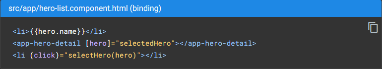
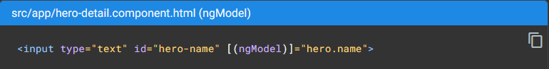

<main class="data-binding-main py-4">
    <div class="data-binding-container">
        <h2>Data binding</h2>
        <hr style="border-color: rgb(117, 117, 117);">
        <p>
            Sem um framework, você seria responsável por enviar valores de dados para os controles HTML e transformar as respostas do usuário em ações e atualizações de valor. Escrever essa lógica push e pull manualmente é entediante, sujeito a erros e um pesadelo de ler, como qualquer programador de front-end de JavaScript experiente pode atestar.
        </p>
        <p>
            O Angular oferece suporte a vinculação de dados bidirecional, um mecanismo para coordenar as partes de um modelo com as partes de um componente. Adicione marcação de ligação ao HTML do modelo para informar ao Angular como conectar os dois lados.
        </p>
        <p>
            O diagrama a seguir mostra as quatro formas de marcação de vinculação de dados. Cada formulário tem uma direção: para o DOM, do DOM ou ambos.
        </p>
        <div class="d-flex justify-content-center align-items-center">
            
        </div>
        <p class="mt-3">
            This example from the HeroListComponent template uses three of these forms.
        </p>
        
        <ul class="mt-3">
            <li ngNonBindable>A <a href="https://angular.io/guide/interpolation" target="_blank">interpolação</a> {{hero.name}} exibe o valor da propriedade hero.name do componente dentro do elemento.</li>
            <li>A <a href="https://angular.io/guide/property-binding" target="_blank">property binding</a> [hero] passa o valor de selectedHero do HeroListComponent pai para a propriedade hero do HeroDetailComponent filho.</li>
            <li>O <a href="https://angular.io/guide/user-input#binding-to-user-input-events" target="_blank">event binding</a> (click) chama o método selectHero do componente quando o usuário clica no nome de um herói.</li>
        </ul>
        <p class="mt-2">
            A two-way data binding (usada principalmente em formulários orientados a modelos) combina a vinculação de propriedades e eventos em uma única notação. Aqui está um exemplo do modelo HeroDetailComponent que usa two-way data binding com a diretiva ngModel. 
        </p>
        
        <p class="mt-3">
            Na two-way binding, um valor de propriedade de dados flui para a caixa de entrada do componente como na property binding. As alterações do usuário também fluem de volta para o componente, redefinindo a propriedade para o valor mais recente, como acontece com o event binding.
        </p>
        <p>
            O Angular processa todas as ligações de dados uma vez para cada ciclo de evento JavaScript, desde a raiz da árvore de componentes da aplicação até todos os componentes filhos. 
        </p>
        <div class="d-flex justify-content-center align-items-center">
            
        </div>
        <p class="mt-3">
            O data binding desempenha um papel importante na comunicação entre um modelo e seu componente e também é importante para a comunicação entre os componentes pai e filho. 
        </p>
        <div class="d-flex justify-content-center align-items-center">
            
        </div>
    </div>
</main>
